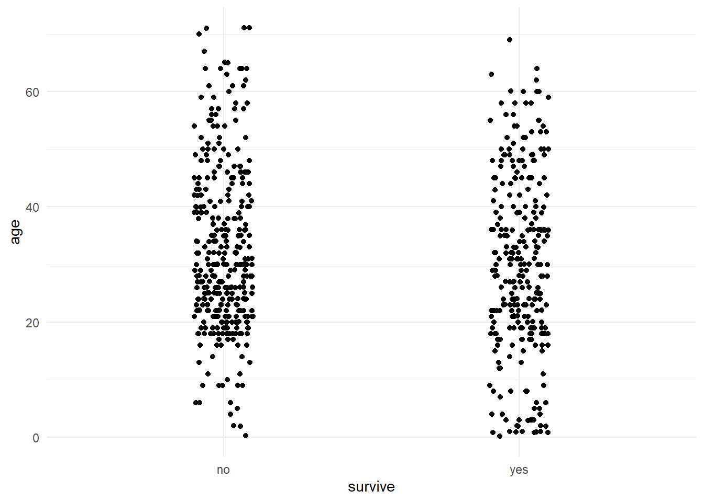
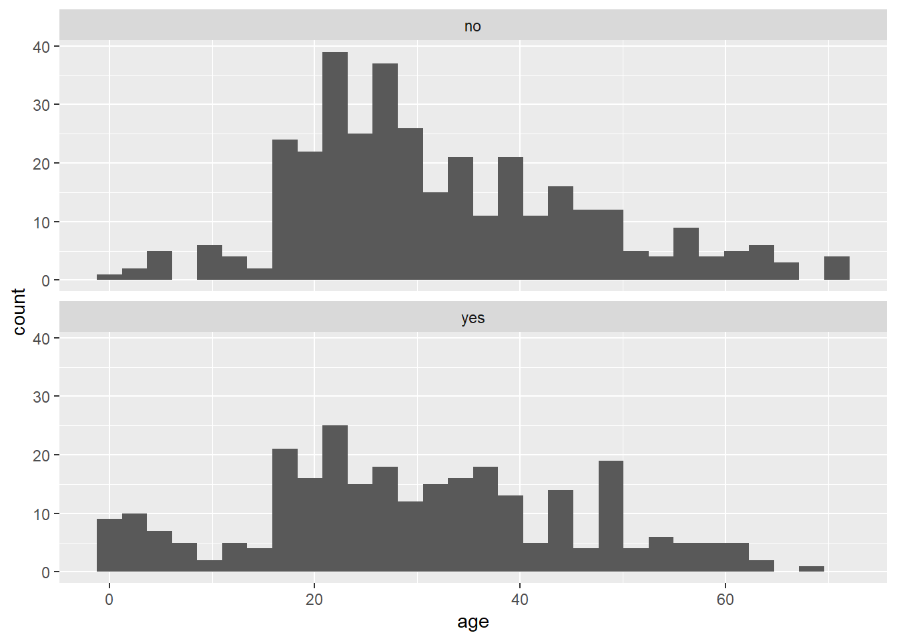
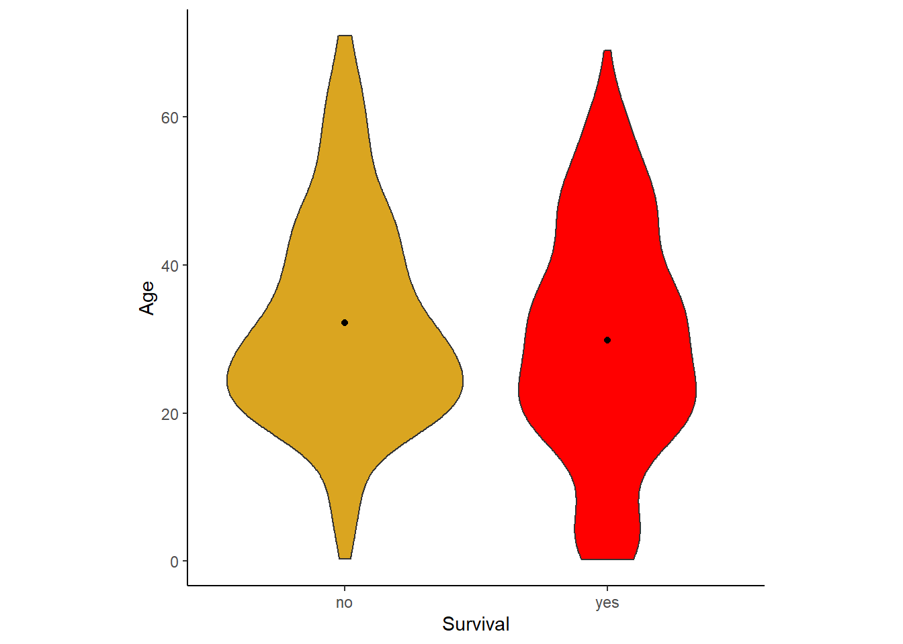
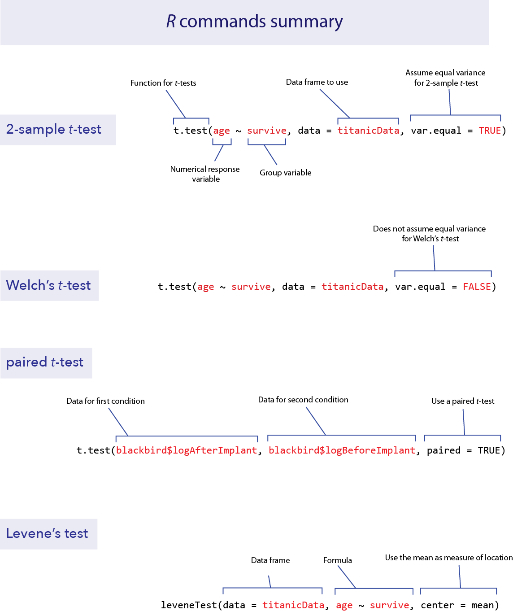

titanicData <- read.csv("data/titanic.csv" )Lab 06 Two-group tests
1 Objectives
Use strip charts, multiple histograms, and violin plots to view a numerical variable by group
Use the paired t-test to test differences between group means with paired data
Test for a difference between the means of two groups using the 2-sample t-test
Calculate the 95% confidence for a mean difference (paired data) and the difference between means of two groups (2 independent samples of data)
Compare the variances of two groups using Levene’s test
Data for all labs (unzip to your working directory)
2 Start a script!
For this and every lab or project, begin by:
starting a new script
create a good header section and table of contents
save the script file with an informative name
set your working directory
Aim to make the script useful as a future reference for doing things in R - this will come in handy for projects and assessments!
3 Setup
We’ll use the Titanic data set again this lab for our examples, so load the data to R.
Also, we will be using ggplot() to make some graphs, so make sure that the package ggplot2 has been loaded. We also will need functions from the package car, so let’s load that as well.
# If the libraries are not found when you load them...
# you probably need to install them, don't you?
library(ggplot2)
library(car)Loading required package: carData3.1 Strip charts andgeom_jitter()
A strip chart is a graphical technique to show the values of a numerical variable for all individuals according to their groups in a reasonably concise graph. Each individual is represented by a dot. To prevent nearby data points from obscuring each other, typically a strip chart adds “jitter”. That is, a little random variation is added to nudge each point to one side or the other to make it individually more visible.
In R, one can make strip charts with ggplot() using the geom function geom_jitter(). In the command below, we specify x = survive to indicate the categorical (group) variable and y = age to specify the numerical variable. If we want more or less jitter, we could use a larger or smaller value than 0.05 in the option position_jitter(0.05).
# grouped data points
ggplot(titanicData, aes(x = survive, y = age)) +
geom_jitter(position = position_jitter(0.1)) +
theme_minimal()Warning: Removed 680 rows containing missing values (geom_point).
One can see from this strip chart that there is a weak tendency for survivors to be younger on average than non-survivors. Younger people had a higher chance of surviving the Titanic disaster than older people.
3.2 Multiple histograms
A multiple histogram plot is used to visualize the frequency distribution of a numerical variable separately for each of two or more groups. It allows easy comparison of the location and spread of the variable in the different groups, and it helps to assess whether the assumptions of relevant statistical methods are met.
Plotting age again as a function of survive, we can write:
# stacked histograms - yes please
ggplot(titanicData, aes(x = age)) + # Specify data
geom_histogram() + # Makes the histograpm
facet_wrap(~ survive, ncol = 1) # Stacks the 2 graphs`stat_bin()` using `bins = 30`. Pick better value with `binwidth`.
We specified the data set titanicData for the function to use. Note that here the numerical variable is entered as the variable on the x axis (x = age). No y variable is specified because that is simply the count of individuals that have that age. The categorical variable is specified in the facet_wrap(~ survive). The “facets” here are the separate plots, and facet_wrap() tells R which variable to use to separate the data across the plots.
What can we learn from the comparison of these groups? Notice, for example, that the very youngest people (less than 10 years old, say) are much more likely to be in the group that survived.
3.3 Violin plots
Another good way to visualize the relationship between a group variable and a numerical variable is a violin plot.
A violin plot can be made in R using ggplot, using the geom function geom_violin().
# Best colour in the kingdom of R *horn of Chreub sounds*
Ed.col <- "goldenrod"
ggplot(titanicData, aes(x = survive, y = age, fill = survive)) +
geom_violin() +
xlab("Survival") +
ylab("Age") +
theme_classic() +
scale_fill_manual(values = c(Ed.col, "red")) +
stat_summary(fun = mean, geom = "point", color = "black") +
theme(legend.position = "none") +
theme(aspect.ratio = 1)Warning: Removed 680 rows containing non-finite values (stat_ydensity).Warning: Removed 680 rows containing non-finite values (stat_summary).
This version has some extra options thrown in. The code is kind of complicated looking, but part of the point is to show what is possible.
What is important here is that it uses geom_violin() to specify that a violin plot is wanted and that it specifies the categorial variable (here survive) and the numerical variable (here age). This graph also added the mean as a dot with the addition of stat_summary(fun.y=mean, geom=“point”, color=“black”).
The violin plot is wider (horizontally) where the density of data is highest. This feature makes it easy to visually compare different part of the distribution of data between the two groups.
4 Two-sample t-test
The two-sample t-test is used to compare the means of two groups. This test can be performed in R using the function t.test(). As we shall see, t.test() actually performs a wide array of related calculations.
As with all other functions in these labs, we will assume here that you have your data in Tidy Data format; that is, each row describes a different individual and columns correspond to variables. For a 2-sample t-test, two variables are used, one categorical and one numerical. So we assume that there is a column in the data frame indicating which group an individual belongs to, and another column that contains the measurements for the numerical variable of interest.
With this data format, we can most easily give input to the t.test() function using what R calls a “formula”. In a formula, the response variable is given first, followed by a tilde (~), followed by the explanatory variables (e.g. height ~ sex, read “height as a function of sex”“). With a t-test, the explanatory variable is the categorical variable defining the two groups and the response variable is the numerical variable.
For example, imagine that we want to test whether individuals which survived the Titanic disaster had the same average age as those passengers who did not survive. For this, the categorical variable is survive and the numerical variable is age. We would write the formula as age ~ survive.
To do a 2-sample t-test, t.test() also needs two other pieces of input. You need to specify which data frame contains the data, and you need to specify that you want to assume that the variances of the two groups are equal. (If you specify this assumption, you are telling R to do a classic 2-sample t-test rather than a Welch’s t-test. We’ll see how to do Welch’s next, which allows for unequal variances.)
To specify the data frame to use, we give a value for the argument data, such as data = titanicData. To tell R to assume that the variances are equal, we use the option “var.equal = TRUE”.
Here is the complete command for this example and the output:
t.test(formula = age ~ survive,
data = titanicData,
var.equal = TRUE)
Two Sample t-test
data: age by survive
t = 2.0173, df = 631, p-value = 0.04409
alternative hypothesis: true difference in means between group no and group yes is not equal to 0
95 percent confidence interval:
0.06300333 4.68528476
sample estimates:
mean in group no mean in group yes
32.24811 29.87396 Notice that in the formula here (age ~ survive), we do not need to use the name of the data frame (as in titanicData$age). This is because we are using a different argument to specify which data frame to use with the data argument (data = titanicData).
The output from t.test() gives a lot of information, which is probably mainly self-explanatory. The title it tells us that it did a Two Sample t-test as we requested. The output gives us the test statistic t, the degrees of freedom for the test (df), and the P-value for the test of equal population means (which in this case is P = 0.044).
Under “95 percent confidence interval,” this output gives the 95% confidence interval for the difference between the population means of the two groups. Finally, it gives the sample means for each group in the last line.
5 Welch’s t-test
The 2-sample t-test assumes that both populations have the same variance for the numerical variable. As we will see in the Activity section later, the 2-sample t-test can have very high Type I error rates when the populations in fact have unequal variances. Fortunately, Welch’s t-test does not make this assumption of equal variance. (Remember, both methods assume that the two samples are random samples from their respective populations and that the numerical variable has a normal distribution in both populations.)
Calculating Welch’s t-test in R is straightforward using the function t.test(). The command is exactly like that for the 2-sample t-test that we did above, but with the option var.equal set to FALSE.
t.test(formula = age ~ survive,
data = titanicData,
var.equal = FALSE)
Welch Two Sample t-test
data: age by survive
t = 1.9947, df = 570.96, p-value = 0.04655
alternative hypothesis: true difference in means between group no and group yes is not equal to 0
95 percent confidence interval:
0.03644633 4.71184176
sample estimates:
mean in group no mean in group yes
32.24811 29.87396 Notice that the output format (and results) is very similar to the standard 2-sample t-test above, except that the first line of the output tells us that R did a Welch’s t-test.
Welch’s t-test (with var.equal = FALSE) is actually the default for t.test(). If this argument is omitted, R will perform a Welch’s test.
Welch’s t-test is nearly as powerful as a 2-sample t-test, but it has a much more accurate Type I error rate for cases when the variances are truly unequal. Its only real disadvantage is that it is more difficult to calculate by hand, but with R it is a much better test to use in most circumstances.
6 Paired t-test
The function t.test() can also perform paired t-tests. A paired t-test is used when each data point in one group is paired meaningfully with a data point in the other group.
We will use a dataset looking at a theory in the study of sexual selection that has a 2 sample paired design. The theory is that males that are attractive to females tend to have high testosterone levels (associated with brighter colours in birds, etc.). However testosterone is costly to males and may lower immunocompetence. Thus, only the evolutionarily “fittest” males can pay the cost. Females preference for these males would be associated with good genes that enable this costly trait (or possibly “sexy sons”). This study manipulated testosterone in 13 male red-winged blackbrids and measured immunocompetence before and after the treatment (Hasselquist et al. 1999).
Load the data with read.csv().
blackbird <- read.csv("data/blackbirdTestosterone.csv")The dataset contains the log antibody production of male blackbirds before (logBeforeImplant) and after (logAfterImplant) the birds received a testosterone implant. There is a before and after measure for each bird, so the data are paired with the individual bird.
We can perform the paired t-test on these data with t.test() by specifying the option paired = TRUE. We also need to give the names of the two columns that have the data from the two conditions.
t.test(blackbird$logAfterImplant,
blackbird$logBeforeImplant,
paired = TRUE)
Paired t-test
data: blackbird$logAfterImplant and blackbird$logBeforeImplant
t = 1.2714, df = 12, p-value = 0.2277
alternative hypothesis: true mean difference is not equal to 0
95 percent confidence interval:
-0.04007695 0.15238464
sample estimates:
mean difference
0.05615385 Again we get a lot of useful output, and most of it is self-explanatory. R reminds us that it has done a paired t-test, and then gives the test statistic, the degrees of freedom, and the P-value. It gives the 95% confidence interval for the mean of the difference between groups. (It will calculate the difference by subtracting the variable you listed second from the variable you listed first: here that is logAfterImplant – logBeforeImplant.) In this case, the P-value is 0.22, which is not small enough to cause us to reject the null hypothesis.
7 Levene’s test
There exist several tests to compare the variances of two or more groups. One of the best methods is Levene’s test. It is difficult to calculate by hand, but it is very easy in R. Levene’s test is available the package {car} with the function leveneTest().
As with other packages you would need to install the package {car} first if you have not done so already, and then use the library() function to load it into R.
# fancy way to check if a package is installed...
# install it if it is not...
# and load it if it is
if(!require("car")) install.packages("car")
# The "hard" way
install.packages("car") # Run if neededWarning: package 'car' is in use and will not be installedlibrary(car)To use leveneTest(), you need three arguments for the input.
data: the data frame that contains the data
formula: an R formula that specifies the response variable and the explanatory variables
center: how to calculate the center of each group. For the standard Levene’s test, use
center = mean
Let’s try this with the Titanic data, with age as the numerical variable and survive as the group variable (a factor).
leveneTest(data = titanicData,
age ~ factor(survive),
center = mean)Levene's Test for Homogeneity of Variance (center = mean)
Df F value Pr(>F)
group 1 3.906 0.04855 *
631
---
Signif. codes: 0 '***' 0.001 '**' 0.01 '*' 0.05 '.' 0.1 ' ' 1For these data, the P-value of Levene’s test is P = 0.049. We would reject the null hypothesis that the group that survived and the group that died had the same population variances for the variable age.
8 R commands summary

9 Activity
Investigating robustness
Remember that the two-sample t-test assumes:
-the variable has a Gaussian distribution within the populations
-the variance of these distributions is the same in the two populations
-the two samples are random samples
The t-test is fairly robust to violations of its Gaussian assumption, but it can be very sensitive to its assumption about equal variances. “Robust” means that even when the assumption is not correct, the t-test often performs quite well (in other words, its actual Type I error rate is close to the stated significance level, α).
Open a browser and load the applet at http://shiney.zoology.ubc.ca/whitlock/RobustnessOfT/
This applet will simulate t-tests from random samples from two populations, and it lets you specify the true parameters of those populations.
Equal means, equal standard deviation.
Let’s begin by looking at a case when the null hypothesis is true, and when the assumptions of the test are met. The app begins with equal means (both populations set with the sliders at a mean equal to 10), but the default values of the variances are unequal. Use the slider for population 1 to give it a standard deviation equal to 2 (so that it matches population 2—confirm that population 2 has that SD value as well). When the mean and standard deviation parameters are equal between the populations, the two populations will have identical normal distributions and the top graph on the app will seem to only show one curve.
When you change the setting for a parameter on the left, the app will automatically simulate 1000 random samples from each population. For each sample, it will calculate a 2-sample t-test for the null hypothesis that the populations have equal means. With the null hypothesis true and the assumptions met, the Type I error rate ought to be 5%. Is this what you observe? (By chance, you may see some subtle departure from this 5%, because we have only simulated 1000 tests rather than an infinite number.) In this case, both distributions are normal and the variances are equal, just as assumed by the t-test. Therefore we expect it to work well in this case.
Equal means, unequal variance, balanced sample size.
Let’s now look at the Type I error rate of the 2-sample t-test when the variance is different between the two populations. Leaving the sample sizes for each group to be the same (at n = 25), set the standard deviation to be 2 to 3 times higher in population 2 than in population 1. (For example, perhaps leave the standard deviation at 1.5 in population 1 and set the standard deviation to 4 in population 2.) What does this do to the Type I error rate? (You should find that the Type I error rate is slightly higher than 5%, but not by much.)
Equal means, unequal variance, unbalanced sample size.
The real problems start when the variances are unequal AND the sample size is different between the two populations. The 2-sample t-test performs particularly badly when the sample size is smaller in the population with the higher variance. Let’s try the following parameters to see the problem. For population 1, set the standard deviation to 1.5 and the sample size to 25. For population 2, set the standard deviation to 4.5 and the sample size to 5. What happens to the Type I error rate in this case? Think about what a high Type I error rate means—we wrongly reject true null hypotheses far more often than the stated significance level α = 5%.
Equal means, unequal variance, Welch’s t-test.
Finally, let’s look at how well Welch’s t-test performs in this case. Leave the standard deviations and sample size as in the last paragraph, but click the button at the top left by “Welch’s”. This will tell the simulation to use Welch’s t-test instead. Does Welch’s t-test result in a Type I error rate that is much closer to 5%?
Different means, power.
The applet will also allow you to investigate the power of the 2-sample and Welch’s t-tests when the null hypothesis is false. Power is measured by the rate of rejection of the null hypothesis. Compare the power of the tests when the means of population 1 and population 2 are close to one another in value (but still different) with scenarios in which the difference between population means is greater. Explore the effects on power of having a larger sample size instead of a small sample size. Compare power when the population standard deviations are small versus large. If you compare the results of the 2-sample t-test and Welch’s t-test, you should find that the power of Welch’s test is almost as great as that of the 2-sample test, even though the Type I error rate is much better for Welch’s.
10 Exercises
10.1
In 1898, Hermon Bumpus collected data on one of the first examples of natural selection directly observed in nature (We mentioned this dataset in a previous lab). Immediately following a bad winter storm, 136 English house sparrows were collected and brought indoors. Of these, 72 subsequently recovered, but 64 died. Bumpus made several measurements on all of the birds, and he was able to demonstrate strong natural selection on some of the traits as a result of this storm. Natural selection has occurred if traits are different between the survivors and non-survivors.
Bumpus published all of his data, and they are given in the file “bumpus.csv.” Let’s examine whether there was natural selection in body weight from this storm event, by comparing the weights of the birds that survived to those that died.
Plot a graph with multiple histograms for body weight (called “weight_g” in the bumpus.csv data set), comparing the surviving and nonsurviving groups (given in the variable “survival”). Do the distributions look approximately normal? Do the variances look approximately equal?
Use
t.test()to do a Welch’s t-test to look for a difference in mean body weight between the surviving and dying birds.What is the 95% confidence interval for the difference in mean weight of surviving and dying birds?
Use a Levene’s test to ask whether the surviving and dying birds had the same variance in weight.
10.2
Let’s return to the data about ecological footprint in the data set “countries.csv”. As you remember, the ecological footprint of a country is a measure of the average amount of resources consumed by a person in that country (as measured by the amount of land required to produce those resources and to handle the average person’s waste). For many countries in the data set, information is available on the ecological footprint in the year 2000 as well as in 2012. Use a paired t-test to ask whether the ecological footprint has changed over that time period.
Plot a histogram showing the difference in ecological footprint between 2012 and 2000. (Note, you will probably need to create a new vector containing the differences, and use
hist()to make the graph.)Use t.test() to do a paired t-test to determine whether the ecological footprint changed significantly between 2000 and 2012.
Interpret your result. Is there evidence that the ecological footprint changed over that time? If so did it increase or decrease?
10.3
A common belief is that shaving causes hair to grow back faster or coarser than it was before. Is this true? Lynfield and McWilliams (1970) did a small experiment to test for an effect of shaving. Five men shaved one leg weekly for several months while leaving the other leg unshaved. (The data from the shaved leg has the word “test” in the variable name; the data from the unshaved leg is labeled with “control.”)
At the end of the experiment, the researchers measured the difference in leg hair width and the hair growth rate on each of the legs. These data are given in “leg shaving.csv”.
Perform a suitable hypothesis test to determine whether shaving affects hair thickness.
How big is the difference? Find the 95% confidence interval for the difference between shaved and unshaved legs for hair thickness.
10.4
The ratio of the lengths of your second and fourth fingers varies in humans (second digit and 4th digit, we will refer to the lengths as 2D and 4D). The 2D:4D ratio is influenced by the amount of testosterone that a human is exposed to as a fetus during the period of gestation improtant for finger growth and development. As such, we might predict there to be a difference between males and females in the 2D:4D ratio. Use these data to calculate the 2D:4D ratio (index finger length divided by ring finger length) on the right hands. The data come from Lolli et al. 2017 and are available in the data file “humanDigits.xlsx”. The dataset is in tidy format, including a data dictionary.
NB the file is Excel format and can be loaded using the function read.xlsx() available in the package {openxlsx}.
if(!require("openxlsx")) install.packages("openxlsx")
# Example code to load the data
# NB you will probably have to supply your own file path
digits <- read.xlsx("data/humanDigits.xlsx")To do this you may need to “slice out” specific rows of the data object, and it may be helpful to review methods for doing that here
Make an appropriate graph to show the relationship between sex and 2D:4D ratio of the right hand.
Test for a difference in the mean 2D:4D ratio between men and women.
What is the magnitude of the difference? Compute the 95% confidence interval for the difference in means.
Harper Adams Data Science

This module is a part of the MSc in Data Science for Global Agriculture, Food, and Environment at Harper Adams University, led by Ed Harris.